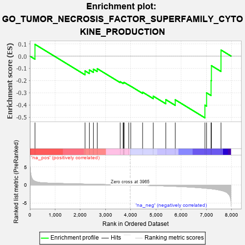
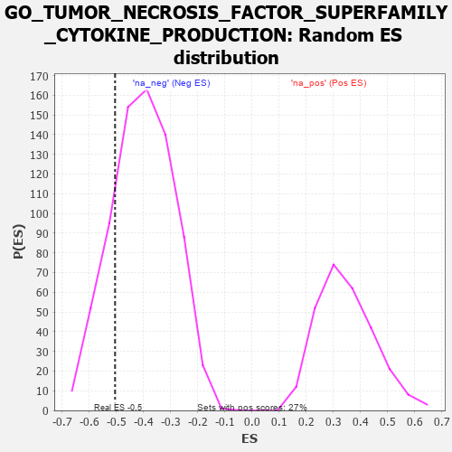

| | | Dataset | 7d |
| Phenotype | NoPhenotypeAvailable |
| Upregulated in class | na_neg |
| GeneSet | GO_TUMOR_NECROSIS_FACTOR_SUPERFAMILY_CYTOKINE_PRODUCTION |
| Enrichment Score (ES) | -0.5049119 |
| Normalized Enrichment Score (NES) | -1.2555299 |
| Nominal p-value | 0.17906336 |
| FDR q-value | 0.5349137 |
| FWER p-Value | 1.0 |
Table: GSEA Results Summary

Fig 1: Enrichment plot: GO_TUMOR_NECROSIS_FACTOR_SUPERFAMILY_CYTOKINE_PRODUCTION
Profile of the Running ES Score & Positions of GeneSet Members on the Rank Ordered List
| PROBE | GENE SYMBOL | GENE_TITLE | RANK IN GENE LIST | RANK METRIC SCORE | RUNNING ES | CORE ENRICHMENT | | 1 | BCL3 | | | 202 | 1.047 | 0.0961 | No |
| 2 | SYK | | | 2186 | 0.278 | -0.1210 | No |
| 3 | MIF | | | 2357 | 0.252 | -0.1131 | No |
| 4 | TLR1 | | | 2517 | 0.224 | -0.1071 | No |
| 5 | WDR83 | | | 2669 | 0.203 | -0.1025 | No |
| 6 | GPR18 | | | 3578 | 0.063 | -0.2093 | No |
| 7 | DHX9 | | | 3693 | 0.044 | -0.2186 | No |
| 8 | HSF1 | | | 3718 | 0.039 | -0.2171 | No |
| 9 | SYT11 | | | 3732 | 0.036 | -0.2145 | No |
| 10 | IFIH1 | | | 3919 | 0.006 | -0.2372 | No |
| 11 | DDX58 | | | 3998 | -0.007 | -0.2461 | No |
| 12 | LRRK2 | | | 4467 | -0.087 | -0.2948 | No |
| 13 | CLU | | | 4889 | -0.174 | -0.3275 | No |
| 14 | FZD5 | | | 5386 | -0.292 | -0.3560 | No |
| 15 | TLR2 | | | 5761 | -0.395 | -0.3572 | No |
| 16 | GHSR | | | 6937 | -0.894 | -0.4011 | Yes |
| 17 | CCR2 | | | 7003 | -0.939 | -0.3004 | Yes |
| 18 | PTPRJ | | | 7180 | -1.054 | -0.2002 | Yes |
| 19 | TSPO | | | 7194 | -1.065 | -0.0782 | Yes |
| 20 | NLRC3 | | | 7574 | -1.515 | 0.0499 | Yes |
Table: GSEA details [plain text format]

Fig 2: GO_TUMOR_NECROSIS_FACTOR_SUPERFAMILY_CYTOKINE_PRODUCTION: Random ES distribution
Gene set null distribution of ES for GO_TUMOR_NECROSIS_FACTOR_SUPERFAMILY_CYTOKINE_PRODUCTION